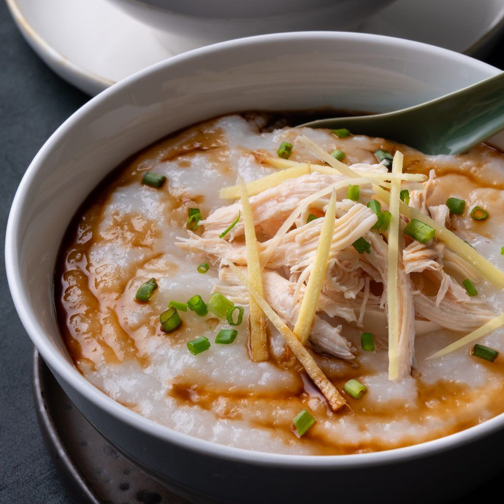

Chicken Congee

Description:
The word "congee" was derived from from the Tamil language of Ancient India, "kanji". In Cantonese,
we call it "jūk" (which kinda sounds like "jook"), but there are many, many different variations and
names for it across Asia.
Even though congee is commonly known as a rice porridge, it wasn't always the case. With thousands of
years of history in China, congee was made with whatever grains were available locally:
millet, cornmeal, barley, and etc.
Ingredients:
- 2/3 cup sushi rice
- finely julienned ginger, to serve
- thinly sliced spring onion (scallions), to serve
- soy sauce, to drizzle
Chicken stock:
- 1.2kg whole chicken
- 8 cups chicken stock
- 4cm piece fresh ginger, sliced
- 4 spring onions, rougly sliced
Steps
-
Place all the ingredients for the chicken stock in a large saucepan over
medium-high heat. Bring to a gentle simmer. Reduce heat to low and simmer
for 40 minutes or until the chicken is just cooked. You can test by
piercing the leg joint and if the juices run clear or just light pink, then the
chicken is cooked. Simmer for longer if your chicken is larger. When cooked,
transfer the chicken to a plate and allow to cool.
-
Strain the chicken stock into another clean saucepan over medium-high
heat. Add the rice and simmer until the rice is broken down and the mixture
is thick and porridge-like (this could take 60-90 minutes). Stir often to
ensure the rice doesn't burn.
- Slice and shred the chicken meat.
-
To serve, divide the congee among serving bowls. Top with the chicken meat,
ginger, spring onion and drizzle with soy sauce to taste.
Back